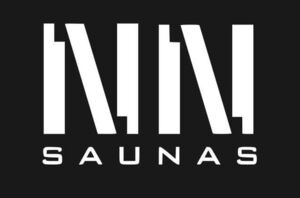

Trade Mark Journal No.2025/051 19 December 2025
WO0000001875718 (11,16,19,20,35,37,40,42)
Office of origin: European Union Intellectual Property Office (EUIPO)
Date of International Registration:17 April 2025
Date of designation in the UK:
17 April 2025

- Class 11
- Steam baths, saunas and bath tubs; shower baths; bathroom sinks; bathroom heaters; whirlpool baths; bath taps; shower bath screens (-metal); bath linings; custom-made saunas; sauna bath installations; sauna apparatus; sauna heaters; sauna stoves; control units [thermostatic valves] for heating installations; control units (thermostatic valves) for saunas; steam generators for saunas and steam baths; water softening apparatus.
- Class 16
- Architects' models; architectural plans; architectural plans for saunas, garden kitchens and outdoor kitchens.
- Class 19
- Wood; building timber; building timber; furrings of wood; platforms, prefabricated, not of metal; building materials, not of metal; wooden buildings; wooden flooring; planks of wood for building; shuttering made of wood; plywood board; building components of wood; building components of imitation wood; facing panels of plywood; joinery products of timber for use in buildings; non-metallic building materials for saunas; building and construction materials and elements made of wood and artificial wood for saunas.
- Class 20
- Furniture; wooden furniture; furniture for wellness; furniture for saunas; deck chairs; benches [furniture]; wooden headrests; furniture for kitchens; garden and outdoor kitchen furniture.
- Class 35
- Business representation in sauna and wellness services; import-export agency services; sales promotion (for others); product demonstrations for business or promotional purposes; organising presentations, exhibitions and fairs for commercial, promotional and advertising purposes; marketing, wholesale and retail services connected with the sale of saunas and parts and equipment therefor, sauna construction elements, wellness products, wooden tubs and basins, fragrances, odours, scrubs, creams, massage products, sauna cleaning products, tubes, tubs, chairs and chaise lounges.
- Class 37
- Joinery [repair]; cabinet making (repair); furniture installation; furniture maintenance; kitchen equipment installation; garden kitchen installation; installation of sanitary apparatus; installation of water pipes; installation of pipework systems; installation of building insulation; installation of geothermal installations; sauna interior installation; installation of internal partitioning; furniture repair; woodwork repair; services for the repair of pipes; services for the repair of drains; carpentry services; installation of saunas; kitchen construction.
- Class 40
- Woodworking; woodworking; wood cutting; sawing of timber; timber preservation; preservative treatment of wood [other than painting]; joinery services [custom manufacturing of woodwork]; custom manufacture of furniture; garden kitchens and outdoor kitchens production; custom assembling of materials for others; sauna production; customised sauna production.
- Class 42
- Construction drafting; conducting technical project studies; design services for architecture; industrial design; architectural design, planning and consulting; sauna design and planning services; design services for garden kitchens and outdoor kitchens; design services for furniture; creating architectural plans.
N & N trgovsko in storitveno podjetje d.o.o.
Representative: PATENTNA PISARNA D.O.O., Čopova ulica 14, SI-1001 Ljubljana, SLOVENIA